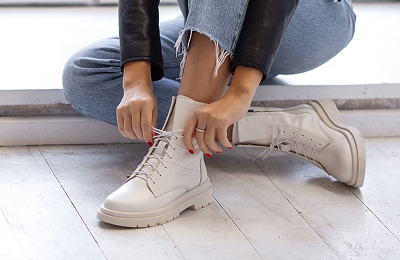

<section class="info__section">
    <div class="container">
        <div class="info__section-wrapper">
            <div class="info__content">
                <h2 class="info__title">
                    <span>Стиль,</span> який поєднується з усім!
                </h2>
                <div class="info__block">
                    <div class="info__img info__img-1">
                        
                    </div>
                    <div class="info__img info__img-2">
                        
                    </div>
                    <div class="info__img info__img-3">
                        
                    </div>
                </div>
                
                <h3 class="info__subtitle">
                    Білі черевики KEDUKI — must-have зими.
                </h3>
                <p class="info__text">
                    Їх носять з пальто, сукнями, джинсами, total white луками — і кожного разу виглядаєш по-новому. Вони не підлаштовуються під образ — <span>вони створюють його.</span>
                </p>
                <a href="#card" class="info__btn">
                    Замовити зараз
                </a>
            </div>
        </div>
    </div>
</section>